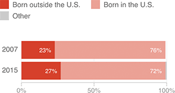

Immigrants Are A Growing Share Of U.S. Catholic Population
Membership in the U.S. Catholic Church as a whole is dropping, according to the Pew Research Center, but the trend would be far sharper if not for the foreign-born.

Notes
Totals may not equal 100 due to rounding. The 2007 and 2014 surveys used different wording to ask about respondents’ countries of birth.